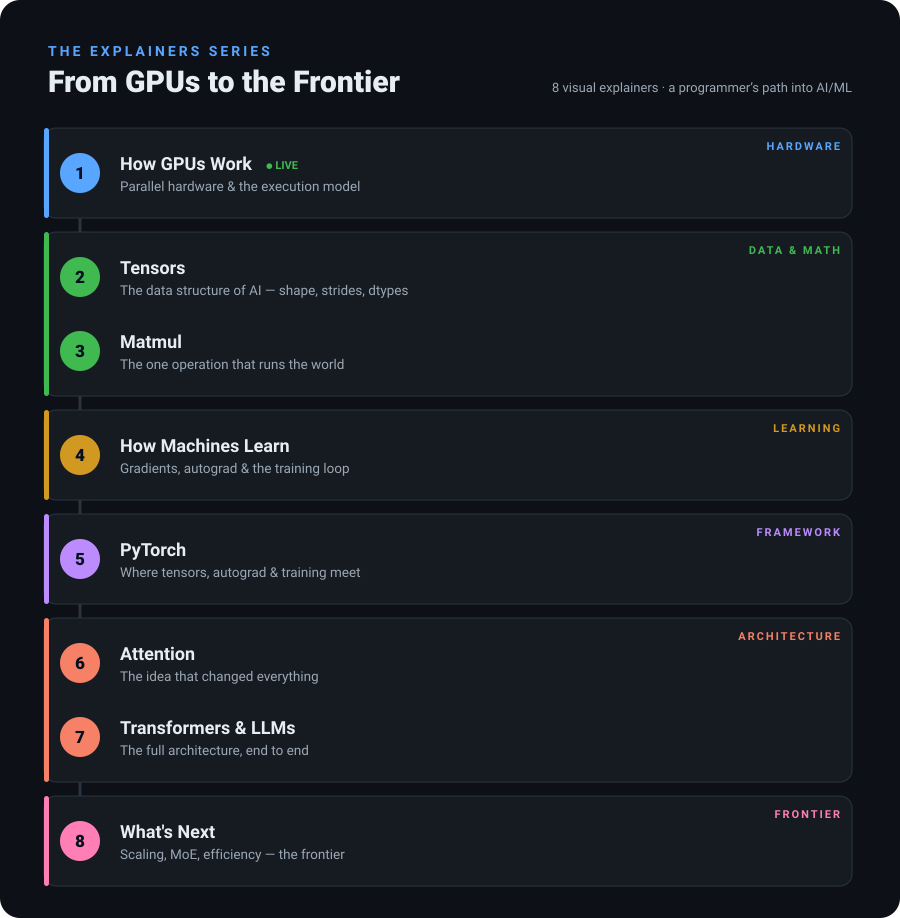

Visual, interactive explainers that take a working programmer all the way from low-level GPU hardware to modern AI — one concept at a time, each building on the last. I'm learning AI/ML in the open and sharing as I go.
